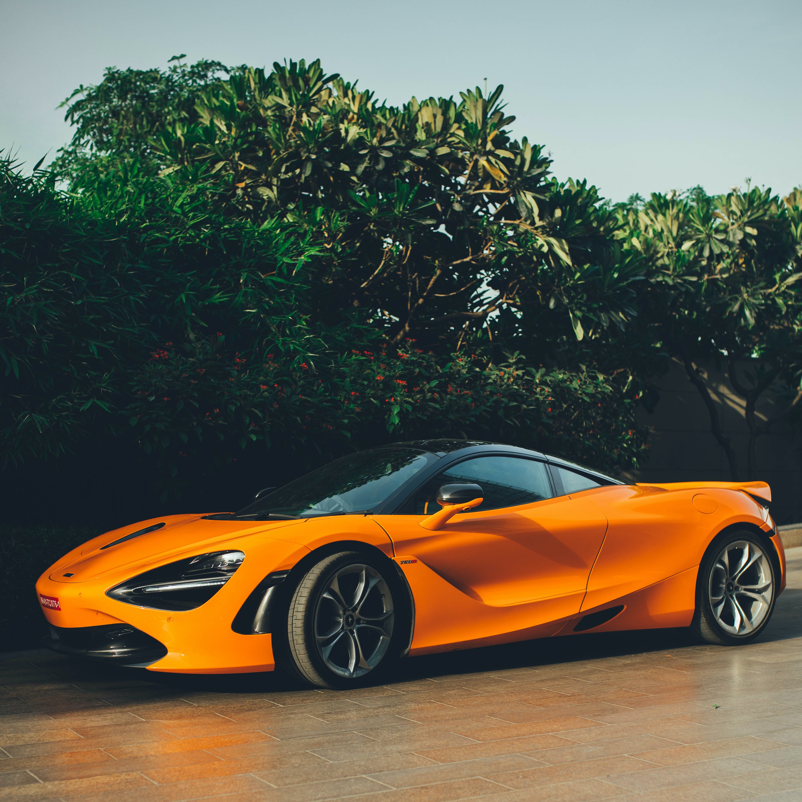

LATEST ARTICLES



McLaren's 720s is headed to an interesting place in a couple of years...
Top 10 things you need in your garage!
It's not just the people who become legends. Cars do, too.
How Japanese JDM car culture impacted the everyday life
I have yet to meet anyone quite so stubborn as myself and animated by this overpowering passion that leaves me no time for thought or anything else. I have, in fact, no interest in life outside racing cars.
-Enzo, Ferrari
For DRIVERS MEMBERSHIP!
Sign up to our newsletter and get first 3 months 50% off!